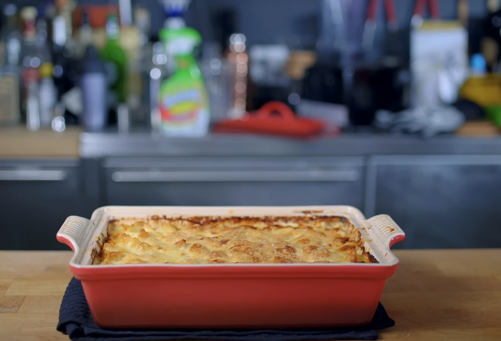

WTH is Mac-n-Cheese?
Mac and cheese is a comforting dish made of tender pasta coated in a rich, creamy cheese sauce. It can be baked to achieve a crispy golden top or served directly from the stovetop for a smoother, creamier texture. Often customized with ingredients like breadcrumbs, bacon, or different cheese varieties, mac and cheese is a beloved classic enjoyed by many.
So, here’s a classic Mac and Cheese recipe for you!
Inredients:
- 8 oz (225g) elbow macaroni (or any pasta
- 2 cups (480ml) milk
- 2 cups (200g) shredded cheddar cheese (or a blend of your favorite cheeses)
- 2 tbsp butter
- 2 tbsp all-purpose flour
- 1/2 tsp salt
- 1/4 tsp black pepper
- 1/4 tsp paprika (optional, for flavor)
- 1/4 cup breadcrumbs (optional, for a crunchy topping)
Instructions:
Cook the pasta:
- Bring a large pot of salted water to a boil.
- Add the macaroni and cook according to package instructions until al dente (usually 7-9 minutes). Drain and set aside.
Make the cheese sauce::
- In a large saucepan, melt the butter over medium heat. Stir in the flour and cook for about 1-2 minutes, stirring constantly to form a roux (paste).
- Gradually add the milk while whisking to avoid lumps. Continue stirring and bring the mixture to a simmer until it thickens (about 5-7 minutes).
- Add the shredded cheese, salt, pepper, and paprika (if using), and stir until the cheese is fully melted and the sauce is smooth.
Combine and serve:
- Add the cooked pasta to the cheese sauce and mix until evenly coated.
- If you like it extra creamy, serve immediately. For a baked version, transfer to a baking dish, sprinkle breadcrumbs on top, and bake at 350°F (175°C) for 20 minutes or until golden and bubbly.
- Enjoy your homemade mac and cheese! Let me know if you’d like any variations or tips.
